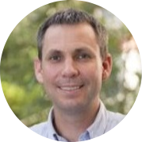
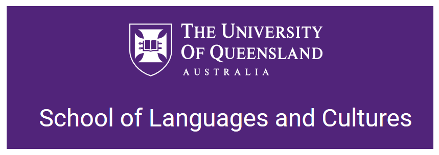
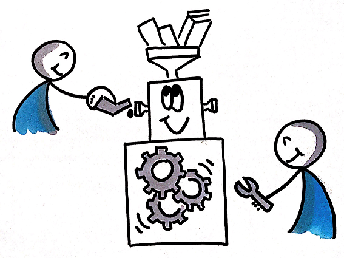
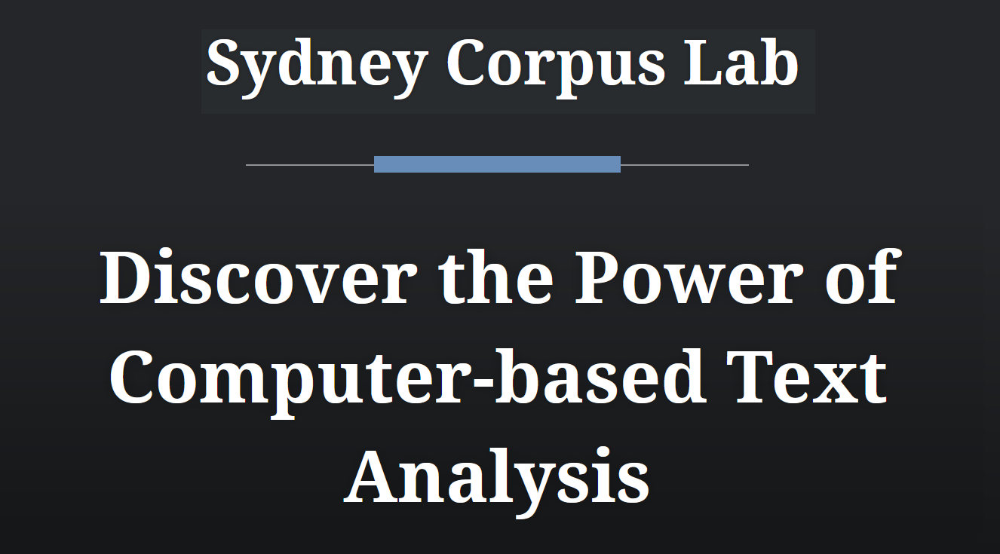
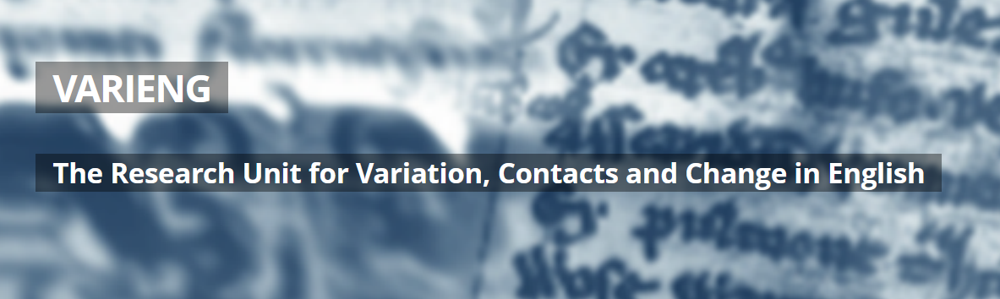
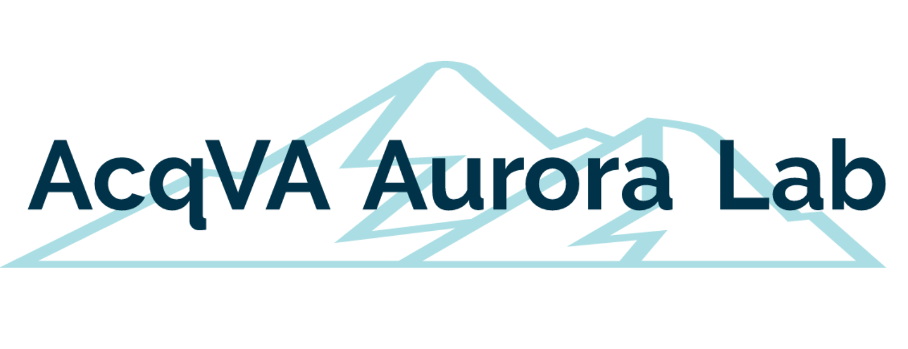
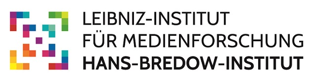

About LADAL
The Language Technology and Data Analysis Laboratory — who we are, what we do, and how to get involved

What is LADAL?
The Language Technology and Data Analysis Laboratory (LADAL) is a collaborative, open-access research infrastructure dedicated to supporting researchers, students, and educators who work with language data. Established in 2019 by the School of Languages and Cultures at the University of Queensland, LADAL provides free, high-quality tutorials, tools, and training in language technology, data analysis, and computational methods — with no programming experience required to get started.
LADAL is part of the Language Data Commons of Australia (LDaCA), a national research infrastructure providing researchers with searchable language datasets, a browser-based notebook environment, comprehensive learning resources, and expert guidance. LDaCA is a co-investment partnership with the Australian Research Data Commons (ARDC) through the HASS and Indigenous Research Data Commons, enabled by the Australian Government’s National Collaborative Research Infrastructure Strategy (NCRIS).
Our Principles
LADAL is committed to FAIR and open science principles in everything we produce.
Findable
All resources are easily discoverable and clearly indexed.
Accessible
Everything is free and open to anyone, anywhere — no paywalls, no registration.
Interoperable
Resources work with standard, widely available tools and workflows.
Reusable
All code and data are freely available for adaptation and redistribution.
Transparent
All methods are clearly documented and explained step by step.
Reproducible
Complete, runnable code is provided for every tutorial.
Collaborative
Community contributions are actively welcomed and credited.
Educational
Knowledge sharing is at the heart of everything we do.
Quality standards: Content is peer-reviewed, regularly updated, and continuously refined based on community feedback.
Who LADAL is For
LADAL is designed for anyone who works with language data, regardless of background or experience level. No prerequisites required — you don’t need prior programming experience, a mathematical background, or expensive software licences.
🔤 Linguists
Corpus linguistics, computational linguistics, sociolinguistics, and more.
📚 Digital Humanists
Text analytics, discourse analysis, and computational approaches to humanities research.
🔭 Social Scientists
Quantitative and qualitative methods for language-based social research.
🏭 Industry Practitioners
NLP applications, text analytics, and applied language technology.
🌱 Complete Beginners
Zero programming experience? Our beginner tutorials start from scratch.
🎓 Students & Researchers
Undergraduate, postgraduate, and academic researchers at any career stage.
Why R?
LADAL primarily uses R because it is ideally suited to language research: free and open-source, purpose-built for statistical analysis, powerful for text processing, and capable of producing publication-quality visualisations. R also supports fully reproducible research workflows through R Markdown and Quarto — this very website is built with R.
With over 20,000 packages available and a large, supportive community, R is both comprehensive and accessible. While R is our foundation, we are expanding to include Python tutorials to serve the broader research community.
What We Offer
LADAL provides three core resource types, all free and open access:
📖 Tutorials
Step-by-step guides covering data science basics, text analytics, statistics, visualisation, and more — with fully runnable R code.
🎓 Courses
Short and long-form courses for structured learning, suitable for self-study or classroom use.
🛠️ Tools
Browser-based notebook tools that let you run analyses without installing anything — upload your own data and go.
User Stories
Researchers and educators around the world use LADAL in their work.
"The way the code is explained in detail and exemplified through actual studies, and the fact that the code is downloadable from the site, are extremely useful. The website also helps in understanding the output of statistical analyses, which is what sets this resource apart from many others."

"LADAL is a tremendously valuable resource that I recommend to all my students in my Quantitative Methods in Linguistics course. It represents current best practices in the field — and that is exactly what LADAL is."
"Whenever I come across a method I want to implement in my own research, a corresponding script with meaty instructions is already available at LADAL. Thanks for such a wonderful, open access resource!"
"I was very happy to find the text analysis tutorial — up-to-date and super helpful! I use it for mining open-ended student survey comments to identify themes without resorting to human coding."
"LADAL is a tremendously useful and powerful resource that has helped me multiple times, both in teaching and in my research. What is special is the clear documentation and the availability of data and code."
Used LADAL in your research or teaching? We'd love to hear your story — email us.
Roadmap and Future
Our roadmap responds to user needs — tell us what you want to see.
🔜 Near-Term Additions
- Automated Speech Recognition tutorial
- Bayesian Regression tutorial
- Advanced machine learning content
- More case studies from diverse fields
- Python tutorials for NLP
🔭 Long-Term Vision
- Expanded language coverage
- International partnerships
- Certification programmes
- Advanced tools and platforms
- Industry collaborations
Directors
LADAL is led by two directors who jointly oversee its strategic direction, content, and operations.
Martin Schweinberger
Senior Lecturer in Applied Linguistics
Director of Research, UQ
Founder and leading proponent of LADAL. A language data scientist with a PhD in English Linguistics, Martin specialises in corpus linguistics, computational analysis, and the visualisation of language data, bridging traditional linguistics and modern computational methods.
2021–2023: Associate Professor & Lab Director, AcqVA-Aurora Center, Arctic University of Norway.

Michael Haugh
Full Professor of Linguistics
Fellow, Australian Academy of the Humanities
Co-director of LADAL with responsibility for supervising activities and overseeing promotion and outreach. A long-standing advocate for Digital Humanities, Michael connects LADAL to Australia's wider language data infrastructure through his leadership of ATAP and LDaCA.
Contributors and Members
Contributors are actively engaged with LADAL, assisting in developing its infrastructure, tutorials, and resources. LADAL works with an internationally diverse team spanning linguistics, computer science, digital humanities, and data science.
| Name | Role | Institution |
|---|---|---|
| Laurence Anthony | Software (Quarto migration) | Waseda University, Japan |
| Sam Hames | Software (backend infrastructure) | University of Queensland, Australia |
| Ruby Baird | Writing – review & editing; backend support | University of Queensland / LDaCA, Australia |
| Gerold Schneider | Writing – original drafts (tutorial/showcase) | University of Zurich, Switzerland |
| Max Lauber | Writing – original drafts (tutorial/showcase) | Previously University of Zurich, Switzerland |
| Erich Round | Writing – original draft (tutorial) | University of Surrey, UK |
| Ludovic De Cuypere | Writing – original draft (showcase) | Ghent University, Belgium |
Affiliate Members
Affiliate members support LADAL and are kept informed about events, workshops, and training opportunities. Affiliate membership is open to researchers and practitioners with an interest in language data analysis, computational linguistics, or digital humanities.
| Name | Institution |
|---|
Peter Crosthwaite | University of Queensland, Australia |
Simon Musgrave | Monash University, Australia |
Ben Foley | Community support | Former CoEDL, Australia |
Stefan Th. Gries | UC Santa Barbara, USA / Univ. Giessen, Germany |
Stephane Guillou | University of Queensland Library |
Joseph Flanagan | University of Helsinki, Finland |
Collaborating Institutions

LADAL's home institution and primary sponsor.

Collaboration on computational text analysis methods, tools, and training.

Shared commitment to open, accessible language data science.

Collaboration on corpus linguistics and computational study of language variation.

Shared resources in language acquisition, variation, and attrition.

Collaboration on NLP and text mining for social scientific inquiry.
Former Members
We gratefully acknowledge former LADAL members whose contributions helped build what LADAL is today.
| Name | Contribution | Profile |
|---|---|---|
| Dattatreya Majumdar | Writing – original draft (2 tutorials) | UQ Profile |
| Katherine Dallaston | — | Website |
| Restuadi Restuadi | — | GitHub |
| Katy McHugh | — | |
| Alex Trueman | — | UQ Profile |
| Stephen Kennedy-Clark | — | |
| Liam Crowhurst | — |
Citing LADAL
Each tutorial page includes its own specific citation. For general LADAL citation:
General citation:
Schweinberger, Martin. 2026. The Language Technology and Data Analysis Laboratory (LADAL). Brisbane: The University of Queensland, School of Languages and Cultures. url: https://ladal.edu.au/ (Version 2026.02.09).
BibTeX:
@manual{uqslc2026ladal,
author = {Schweinberger, Martin},
title = {The Language Technology and Data Analysis Laboratory (LADAL)},
note = {https://ladal.edu.au},
year = {2026},
organization = {The University of Queensland, School of Languages and Cultures},
address = {Brisbane},
edition = {2026.02.09}
}Licensing
All LADAL content is freely available under the GNU General Public License, Version 3. You are welcome to use LADAL content in your teaching, adapt code for your research, share resources with colleagues, and build upon our work — provided you cite LADAL appropriately, keep derivatives open-source, and maintain licence notices.

Frequently Asked Questions
Do I need to know programming?
No. Our beginner tutorials assume zero programming experience.
Is LADAL really free?
Yes, completely. No hidden costs, no paywalls, no registration required.
Can I use LADAL for teaching?
Absolutely. All content is freely available for educational use.
Do I need to install R?
No — we offer browser-based notebooks. We do recommend installing R for serious or sustained work.
How do I get help if I'm stuck?
Email us at ladal@uq.edu.au, check the tutorial FAQs, or search online R communities.
Can I contribute?
Yes! We welcome contributions. Contact us to discuss opportunities.
Is there support for languages other than English?
Most content is currently in English, but we are actively working on multilingual resources.
How often is content updated?
Regularly. We continuously improve tutorials based on feedback and new developments in the field.
Can I download the tutorials?
Yes — all code and materials are downloadable from each tutorial page.
Who funds LADAL?
LADAL is supported by the University of Queensland and is part of LDaCA, funded through ARDC/NCRIS.
Get Involved
Acknowledgments
LADAL exists because of the generous support of many individuals and institutions.
Institutional support: University of Queensland School of Languages and Cultures · Language Data Commons of Australia (LDaCA) · Australian Research Data Commons (ARDC) · HASS and Indigenous Research Data Commons
Funding: NCRIS · Australian Research Data Commons · Australian Government · University of Queensland
Foundational contributions: Early LADAL tutorials drew substantially on the work of Andreas Niekler (University of Leipzig) and Gregor Wiedemann (Leibniz Institute / HBI) — in particular their tutorial on R for Humanities Research. We gratefully acknowledge their foundational role in shaping LADAL’s early content.
Community: Tutorial contributors and reviewers · Workshop participants · Our global user community · The open-source R community
Legal Disclaimer
The content of this website is provided free of charge and comes with ABSOLUTELY NO WARRANTY. You are welcome to redistribute LADAL content under the terms of the GNU General Public License, Version 3. Content is provided “as is” with no guarantees of accuracy or fitness for purpose. Users are responsible for verifying results. If you find an issue, please report it.
This page was revised with the assistance of Claude (claude.ai), a large language model created by Anthropic. All content was reviewed, edited, and approved by the author (Martin Schweinberger), who takes full responsibility for the accuracy and scholarly integrity of the material.